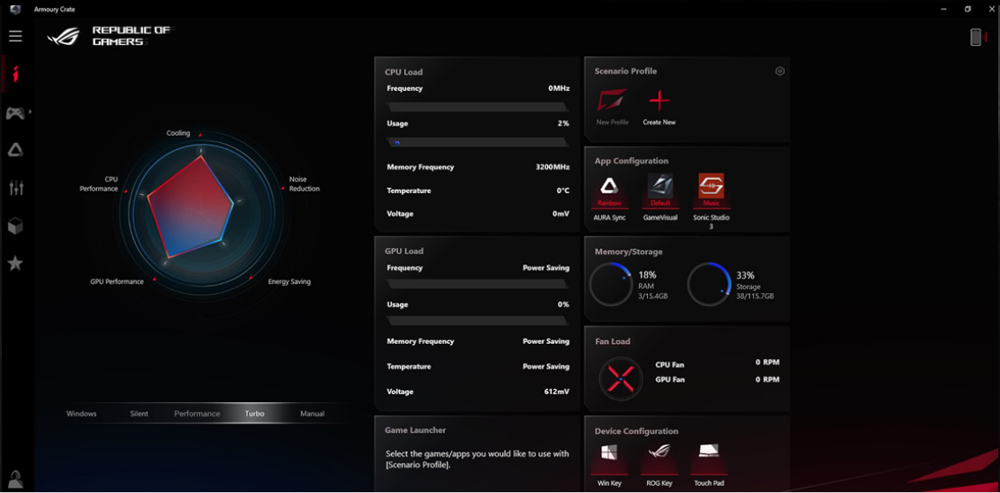

Hasta el sol de hoy Intel y AMD han intentado tomar la competencia de procesadores hasta que AMD lanzo suAPU Ryzen 4000 llego a superar a Intel pero hace poco ASUS lanzo un modelo de laptop que tiene unas características muy buenas que desmarca la otras grandes laptops gamers unas de las que vamos hablar se llama ROG Zephyrus G14 si quieres saber más sobre esto, que puede ofrecer y por que es la más potente del mundo, sigue leyendo este artículo que puede sorprenderte de lo que puede ofrecer esta belleza.
Tienes característica muy buenas que demarca las otras laptops aquí en tecno expand no publicamos los portatiles que sean similares sino que sean diferente que pueda ser ideal para ti que tenga características única, claro, ¿quien no quiere una laptos asi?, potente que puede tener las característica de tus sueños, lo que desmarca esta con las otras es que es el primer ordenador portátil que viene equipado con los procesadores de gaming móviles más modernos de AMD y te podrás imaginar lo recaliente que se pondrá, pero eso no tiene problema para la empresa ASUS.

Sin tanto royo contiene la siguientes característica principales viene equipado con un procesador Ryzen 9 4900HS de AMD, una gráfica Nvidia RTX 2060 Max Q, 16GB DDR4-3200 de memoria RAM y un SSD NVMe PCIe 3.0 de 1TB por 1450 dólares. Este es el modelo más avanzado, pero puedes optar por un procesador Ryzen 7 4800HS con una gráfica GTX 1660 Ti para reducir el coste. El precio varía según la configuración exacta.
Cuando hablamos de laptops gamers hablamos de sus características pero en ocasiones no hablamos de la batería que una de las más importa también en el ámbito del equipo, HASTA 10.7 HORAS REPRODUCCIÓN DE VÍDEO y HASTA 9.5 HORAS BUSCANDO EN LA WEB si no te sorprende deberías mi querido público por que con la fuerza de energía que debe de absorber el procesador y la placa madre es mucha esto si es sorprenderte a diferencia de otras laptops.
El software ROG Armory Crate unifica los controles del sistema y la iluminación para poner las configuraciones esenciales a su alcance en una sola utilidad. Puede definir y personalizar fácilmente los Perfiles de escenario que realizan ajustes automáticamente cuando inicia sus títulos favoritos.
Se calienta demasiado.
Gran diseño, nada de luces de colores.
El AMD Ryzen 4 4900HS aniquila al Intel Core i9-9980HK en la mayoría de los benchmarks.
1080p, 120Hz, sin webcam.
Buen rendimiento en los juegos.
Nos interesa tu interés si te gusto el artículo y piensa que pudimos aporta algo relacionado con la tecnología te podemos ofrecer esto y muchos más por esa razón ya tenemos 2 cosas en común nos dedicamos a esto a la tecnología pero específicamente a computadoras y laptops si es lo que quieres tener claro días tras días, la belleza que puede ofrecer estas empresas relacionado con las computadoras, si estoy en lo correcto puedes seguirno en nuestra páginas de Facebook no te lo pierdas o en Instagram estaremos subiendo contenido similares a estos para darte lo que es la tecnología y como avanza por que quizás hay cosas que ni sabes y podemos darte la ideas de que existen aún.
Quizas te puede interesar